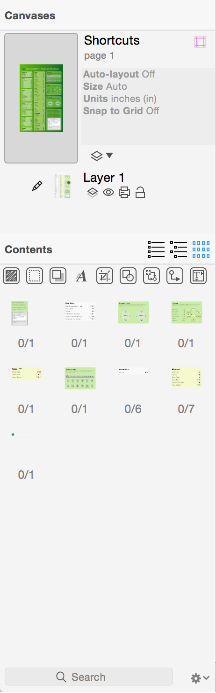
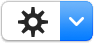
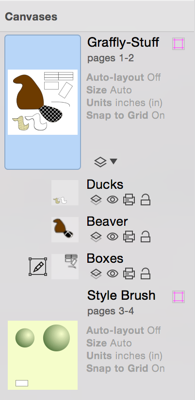

Defining and Using the Canvas❯
Defining and Using the Canvas❯
 On the left side of OmniGraffle’s window is the Sidebar. In earlier versions of OmniGraffle, there were actually two sidebars on the left: one for Canvases and another for Contents. In OmniGraffle 6, however, these two sidebars were combined into one that’s split in half with Canvases on top, and Contents below.
This split-level sidebar gives you more room to work with on the Canvas, while still giving you access to your project’s canvases, layers, and the Contents editors in one convenient place. Hover over the sidebar just above the Contents section and the pointer changes to a resize control; click and drag up or down to make one part bigger or smaller.
However, before you can do any work on the Canvas, the first thing you need to familiarize yourself with is OmniGraffle’s Resource Browser. Depending on how you have your preferences set, the Resource Browser is probably the first thing you’ll see after opening OmniGraffle.
The Resource Browser (File ▸ Resource Browser or Shift-Command-N) makes it easy for you to start out with a Template, load and edit one of the Stencils, or you can choose from one of the Diagram Styles.
The sidebar on the left makes it easy for you to find Templates and Stencils to use in your next project. At the very top, we’ve included a Recents section, which remembers the Diagrams, Templates, and Stencils you’ve used or created recently. When you select an item, the sidebar on the right displays all kinds of details about the file you’ve selected, including its name, size, the units of measurement, and whether auto-layout and snap to grid are enabled.
Use the Action menu (the little gear ) to open or create new files, templates, and stencils, reveal where a particular resource lives on your Mac in the Finder, move an object to Trash, or set a particular template that you’re fond of as the default. If you have used OmniGraffle in the past, you can use the Restore option in the Action menu to restore older templates and stencils on your Mac so they work with OmniGraffle 6.
The Resource Browser also has a Help button ( ), which you can click to access the very same Help documentation you’re reading right now.
), which you can click to access the very same Help documentation you’re reading right now.
OmniGraffle comes with several templates, and you can create your own if you find that you’re creating the same kind of document over and over again. A template is a document that acts as a starting point for new documents.
To open a template, choose File ▸ Resource Browser (Shift-Command-N) and select one of the available Templates.
When you select a template in the Resource Browser, you’ll notice that the right side of the window reveals a little more detail about the template. If you find that you’re using a particular template often, click Make Default to specify the selected template as the default.
After you set a default template, OmniGraffle bypasses the Resource Browser and uses the default template for any new documents you create. If you don’t want to use the default template, just open the Resource Browser (Shift-Command-N) and choose something else.
You can also create a new template or edit a template that belongs to you. When you create an OmniGraffle template, everything about it is preserved, from the canvas size and grid layout, to layers, to visibility of extras, to the automatic layout settings.
To create a template, choose File ▸ New Resource ▸ New Template from the menu bar, and then choose an existing template to use as a starting point. Set up the document exactly the way you want it, then save it to the Templates folder that OmniGraffle has already set up on your Mac. Once saved, your template is available in the Templates section of the Resource Browser.
The Canvas is where you create, edit, and move objects around in your project. By default, every OmniGraffle document contains at least one canvas with one layer, and you can add as many Canvases as you’d like.
Canvases give you the flexibility to separate your work into distinct areas in the same document. Not sure if you like how an illustration you’ve been working on is coming together? Duplicate the canvas and apply a new set of styles so you can see which one you like best.
For those times when all you want is to work on the Canvas and not be distracted by the sidebars, remember that Option-Command–1 hides the Sidebar on the left, and Shift-Command-I hides the Inspectors sidebar on the right.
The Canvases sidebar is open by default, and lists all of the Canvases available in your document. You have many options for hiding and showing the sidebar:
 To work on a Canvas, select the canvas by either clicking its name or the preview icon in the sidebar. When you do, the preview icon takes on a light blue highlight, and any objects appear on the working canvas in the middle of OmniGraffle’s window.
Each Canvas has a title, a disclosure triangle for showing its layers, and a preview image:
To select a canvas, click its name or the preview image. The canvas appears in the document window, where you can add and edit objects.
To rename a canvas, double-click its name in the sidebar.
To create a new canvas, click the new canvas button at the bottom of the sidebar.
To delete a canvas, select the preview image in the sidebar and then use one of the following options:
Canvases can be dragged around to rearrange their order, or to copy them between documents.
To change the style attributes of a canvas, first click its preview in the sidebar, and then use the Canvas inspectors (Command–4) to change its style and other attributes such as size, units, grid, and whether or not auto layout is turned on.
When you’re working on the Canvas, one of the more common ways to align objects is to use guides. If you turn on the rulers (View ▸ Rulers, or Command-R), you can click on either the horizontal or vertical ruler bar and drag out a guide onto the canvas. For more precise positioning, you can zoom in on the canvas for pixel-perfect positioning, which is handy when you’re using OmniGraffle to prototype the user interface for an application, or even laying out the floorplan for your home or office.
If you click on the Guides icon (the pink square to the right of each canvas), you’ll find OmniGraffle 6’s new Guides pop-up. To add a new guide, just click +; new guides are spaced apart evenly, or you can enter a specific value to position the guide exactly where you need it.
Using any of the color wells, you can choose a new default color for your guides, or set their colors individually. This is particularly helpful when you have a background image with varying colors (such as a gradient) that might clash with an otherwise default guide color.
Using the icons in the upper-right corner of the Guides pop-up, you can also toggle the guides’ visibility or lock them into position.
Layers contain all of the fine details about your Canvases. Each Canvas starts out with one layer, but you can add as many new layers as you need to make it easy for you to keep track of certain objects or blocks of text.
By default, the layers are hidden beneath a disclosure triangle. To see all of the layers in your Canvas, click the disclosure triangle to flip it open; click it again to hide the layers.
Each layer in the list has a small Preview icon of its contents, a Title, and a row of four icons underneath the title.
The layer you are currently editing has a Pencil icon to its left. To edit a different layer, just click to the left of its preview and the pencil icon moves there.
To make a layer visible or invisible, click its Eye icon. To set whether a layer is printable, click the Printer icon. To lock or unlock a layer, click the Lock icon; locking a layer prevents its contents from being changed.
You can rearrange layers by dragging them up or down in the list. You can also drag a layer from one Canvas to another, or you can Option-drag a layer to copy it instead. If you drag a layer to a different OmniGraffle document, the layer is always copied.
To add a new layer:
To delete a layer:
And remember, if you delete a layer by accident, you can always hit Command-Z to restore the layer.
You can share a layer between multiple canvases. That way, whenever you change the layer, it affects every canvas that uses that layer.
To share a layer between canvases, select the layer and then:
When a layer is shared, the title turns orange and an orange tint is added to the layer’s preview image.

To create a new shared layer:
After creating (or designating an existing layer as) a new shared layer:
Objects on shared layers, the corresponding items in the list sidebar, and shared layer previews in the canvases sidebar all appear in the distinctive shared layer color, to remind you that you could be affecting many canvases if you edit them.
To delete a shared layer, select the shared layer and:
There is also a Delete [layer name] from All Canvases option that, when chosen, removes that shared layer from every canvas in your project.
The Contents portion of the Sidebar offers three different ways to create, view, and edit the objects in your projects: List View, Outline Editor, and Selection Matrix.
To switch between the different sections of the Contents sidebar, you can either click on the buttons in the header row for the Contents sidebar, or:
The layers in your project have like-named sections in the Contents section as well. This makes it easy for you to keep track of different elements of your project.
As you select an object in the Contents section, the Inspectors (see the Inspectors section) change accordingly. This is particularly helpful for when you are in the Selection Matrix and need to tweak the styles of similar objects (for example, changing the font size for all of your labels at once or adding a drop shadow to certain objects).
List View shows you every object on every layer of the current canvas, in front to back order.

Within that list, you can drag objects into different ordering or from one layer to another.
In the General preferences, you can choose to display the object ID numbers along with the items in List View, which can be useful for scripting.
The Outline Editor gives you a quick way to enter lots of data, and an alternate way to look at hierarchical diagrams. The outline shows any shapes you’ve created on the canvas, arranged hierarchically according to the lines that connect them. Likewise, as you enter text into the outline, shapes are automatically created and connected on the canvas with corresponding text.
To start working in the outline, just click an existing item, or double-click in an empty area to create a new item. While you work in the Outline Editor, the following keys can be used to create and arrange items:
An item can be dragged around the outline view by its handle, the dot or triangle to the left of each item. Dragging an item with children brings its children along for the ride. While you drag an item, a black line shows the location and indentation level at which the item will be dropped when you let go of the mouse button.
A group, table, or subgraph on the canvas is shown as a single item in the outline, surrounded by brackets. Click the arrows on the right side of the item to see the objects inside and edit their text.
While the Outline Editor is handy for entering lots of information quickly, an outline can’t always perfectly represent the relationships in a complicated diagram. Objects with more than one parent, lines connected to other lines, and circular ancestry (“I’m my own grandpa!”) are all examples of the kinds of things a simple outline can’t properly show. In these cases, the Outline Editor tries its best to be accurate. If your diagram is not strictly tree-like, you probably shouldn’t rely too much on the Outline Editor if what you need is a quick representation of the objects’ relationships.
The Selection Matrix provides an alternative organization scheme for the objects on the Canvas. Objects in the Selection Matrix are grouped together by kind based on their style properties.
Along the top of the Selection Matrix is a row of buttons that look oddly familiar. No, they’re not the symbols you’d expect to see on a football coach’s chalkboard during halftime, these relate to the styles you can set for the objects on the Canvas.
All of these are on by default, and this gives you the finest level of granularity when evaluating your objects. But as you turn one—or all—of them off, you’ll notice that the previews in the Selection Matrix become more compact.
Click on a class of objects in the matrix to select them all for manipulation, or select them individually in the main view.
Diagram Styles are OmniGraffle documents that define an appearance which you can apply to an outline or a diagram. There are infinite ways to represent the same information; a diagram style helps you indicate just how you want the data to be represented.
Diagram styles come in handy when you’re creating an outline with OmniGraffle’s Outline Editor (View ▸ Show Contents ▸ Outline Editor, or Option-Command–3). The Outline Editor is a great way to quickly enter information and set up relationships for the objects in a diagram. To quickly style all of the elements, choose Format ▸ Choose Diagram Style to select and apply a style set to your diagram.
You can also import an OmniOutliner file and automatically apply a Diagram Style in the Import Outline dialog. Use the pop-up menu at the top of the dialog to select which Diagram Style to apply, select either New Document to create a new document or New Canvas to add a new canvas to your current OmniGraffle document, and then click OK.
OmniGraffle applies the chosen Diagram Style to text imported from the OmniOutliner file and translates that text into visible objects on the canvas. When you apply a diagram style, the items of the outline are styled to match the diagram style’s shapes, connection lines, and automatic layout settings. Items at each level of the outline become shape objects, matching objects at the same level of the diagram. If the outline has more levels than the diagram style, the deeper items use the styles of the deepest level of the diagram style.
Diagram Styles make it easy for you to get a visual representation of something that might otherwise just appear to be static text. For example, if you are a writer, this is a great way to map out the relationships of different characters or to visualize the story arc of that novel you’ve been working on. What’s more, OmniGraffle comes packed with a variety of Diagram Styles, so if you don’t like one, you can always apply another by choosing Format ▸ Choose Diagram Style and selecting a different style.
You can force manually styled objects to conform to the diagram style by selecting them and choosing Format ▸ Restyle Selected Objects, or you can force all objects on the canvas to conform by choosing Format ▸ Reapply Diagram Style.